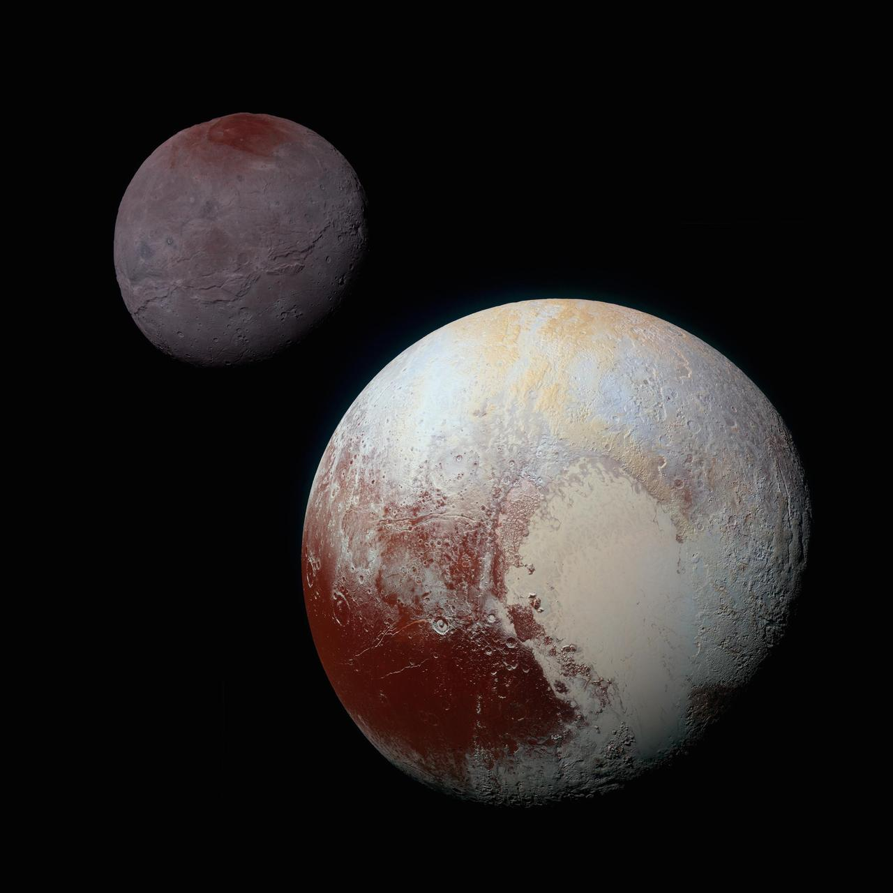

About Dwarf Planet
Welcome to the enigmatic world of Pluto, a distant dwarf planet that continues to captivate our imagination and push the boundaries of our understanding of the solar system!
Discovered in 1930 by astronomer Clyde Tombaugh in Arizona, Pluto has since been the subject of fascination and debate, from its reclassification as a dwarf planet in 2006 to the historic flyby by NASA's New Horizons spacecraft in 2015. Despite its small size and remote location at the edge of the solar system, Pluto is a world of remarkable diversity and complexity. Its surface is marked by rugged mountains, vast plains, and glaciers, all shrouded in a thin atmosphere of nitrogen and methane. From the heart-shaped region known as Tombaugh Regio to the towering peaks of water ice, Pluto's landscape is a testament to the dynamic forces at work in our solar system. But Pluto's intrigue extends beyond its surface features. Its system of moons, including the largest moon Charon, provides insight into the gravitational interactions that have shaped the outer reaches of our cosmic neighborhood.
Embark on the ultimate adventure and witness the awe-inspiring beauty of Pluto firsthand. A journey to Pluto promises an unforgettable solar safari experience unlike any other, offering a chance to explore the outer reaches of our solar system and discover the wonders of this distant planet.
Pluto and Charon

Charon (Top left in the image above) is the largest moon relative to its parent body in the solar system. It's
so large compared to Pluto (Bottom right in the image above) that
some scientists refer to the two bodies as a double dwarf planet system rather than a planet-moon
system.
Charon's surface exhibits several dark spots, the largest of which is informally named Mordor Macula.
These dark regions are thought to be composed of complex organic compounds, possibly originating from
the photolysis of methane on Charon's surface.
Pluto's other moons, including Styx, Nix, Hydra, Kerberos, and others, are much smaller than Pluto's
largest moon, Charon, and are thought to be remnants of a collision between Pluto and another object in
the distant past.
Itinerary
| Duration | Activity | Location |
|---|---|---|
| 9 years | Gravity Assist travel | Solar System |
| 1 year | Arrival and check-in at luxury orbital resort | Pluto Orbit |
| 6 months | Enjoying panoramic views of Pluto and its moons from the resort | Pluto Orbit |
| 3 months | Excursion to the stunning cliffs and valleys of Charon | Charon Surface |
| 3 months | Exploring the icy plains and mysterious dark regions of Pluto | Pluto Surface |
| 3 months | Adventurous journey to the rugged terrains and jagged mountains of Nix | Nix Surface |
| 6 months | Indulging in fine dining and entertainment at the resort while marveling at Pluto's beauty | Pluto Orbit |
| 1 week | Experience the thrill of gliding through Pluto's thin atmosphere on the Frozen Plunge ride | Pluto Atmosphere |
| 9 years | Return journey to Earth | Solar System |
Trip Cost
Embark on an extraordinary journey to the distant reaches of our solar system and explore the enigmatic
Pluto and its moons with our exclusive travel package.
- Travel Duration: 18 years
- Cost: $50 billion per person
- Inclusions: Accommodation in luxury orbital resort, meals, excursions to Pluto and its moons, entertainment, and return journey
- Optional Add-ons: Cryo sleep travel, surface expeditions, personalized tours of specific moons, and immersive experiences such as simulated low-gravity walks
Secure your spot for this unparalleled odyssey to Pluto today and prepare for an unparalleled adventure through the depths of our solar system.